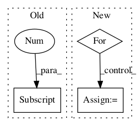

Pattern ID :113
Before Change
raise NotImplementedError
def tag(self, tokens):
return self.tag_sents([tokens])[0]
def tag_sents(self, sentences):
encoding = self._encoding
default_options = " ".join(_java_options)After Change
// Handle the case where return more than one sentence.
// Note that if it is the case, user should use tag_sents instead
result = []
for sent in temp:
result += sent
return result
def tag_sents(self, sentences):In pattern: SUPERPATTERN
Frequency: 3
Non-data size: 3
Instances Fragment ID: 136754
Project Name: nltk/nltk
Commit Name: c6b5fa6dcc360c6542328071c92ac666a70e195b
Time: 2015-01-16
Author: HeroAthen@192-168-1-9.tpgi.com.au
File Name: nltk/tag/stanford.py
Class Name: StanfordTagger
Method Name: tag
Fragment ID: 136752
Project Name: nltk/nltk
Commit Name: ef39a1b8631e06059c6d1ae33471d28dbb6e11f7
Time: 2008-07-26
Author: edloper@ldc.upenn.edu
File Name: nltk/corpus/reader/conll.py
Class Name: ConllCorpusReader
Method Name: _read_grid_block
Fragment ID: 136753
Project Name: nltk/nltk
Commit Name: 402aaa02060c1ece1f678fa179b38f4f1bff3bf6
Time: 2011-02-01
Author: peter.ljunglof@heatherleaf.se
File Name: nltk/tag/hunpos.py
Class Name: HunposTagger
Method Name: tag